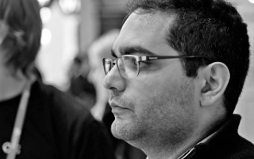
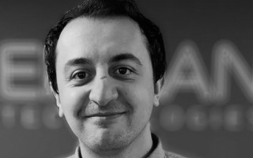

Speakers and Talks
Patricia Aas
Isolating GPU access in its own process
Chromium's process architecture has graphics access restricted to a separate GPU-process. There are several reasons why this could make sense, three common ones are: Security, Robustness and Dependency Separation.
GPU access restricted to a single process requires an efficient framework for communication over IPC from the other processes, and most likely a framework for composition of surfaces. This talk describes both the possible motivations for this kind of architecture and Chromium's solution for the IPC framework. We will demonstrate how a multiprocess program can compose into a single window on Linux.
Patricia Aas is a C++ programmer working on the Vivaldi Browser where she has currently taken on platform integration of media. She has previously worked at Opera Software on their Desktop Browser and at Cisco on their Telepresence Hardware Endpoints, primarily on Linux. Patricia is a curious person, always trying to find out how things work. She hopes that we will find a way to make the world a better place by creating things that can be used for good.
Paul Adams
The Art of the Pull Request
Take a moment to ask yourself, "what are Pull Requests for?"
Typically PRs are used as a means to communicate that some body of work has been done and is ready to be merged. But is this an optimal use of PRs? If we submit a PR after the work has been completed, have we missed a golden opportunity to collaborate?
PRs should be treated like the basic unit of collaboration within GitHub-based projects. By using PRs as communication medium and not simply as a review mechanism, we can create opportunities to communicate better within our projects, enhance the on-boarding of new contributors and help catch potential problems early.
In this short talk, I show off the good, the bad and the ugly of PRs and provide a template for best practice which encourages communication and collaboration within your community.
Paul Adams is the Open Source Lead for Europe's largest e-commerce platform, Zalando. Paul works in support of a team that helps to grow a community around Zalando's open source technologies and to consult internally on how best to operate in an open manner. Paul is known as a long-time contributor to the KDE community but these days, spends most of his contribution time working on Habitat.

Martin Bergek
Monitor everything from physical hardware to application functionality
The IT industry is a diverse and dynamic world where applications and functions may be spread out - and move between a multitude of providers and technologies such as Amazon AWS, Rackspace, KVM, volatile containers, and your internal traditional IT infrastructure with physical servers.
Monitoring all of these might require one monitoring tool per platform, or at least a few to seamlessly blend metrics, events and logs to get true Observability on your environment. OP5's intention is to address this with Project Omega. Designed from the ground up using cloud-native technologies packaged in a container environment to be running on premise or as SaaS, scaling horizontally with Kubernetes.
Initially the focus is on monitoring OpenStack with the Monasca project and developing the agent in and for the community providing patches and reviews since the Queens release of OpenStack, using modern REST API’s, time series database for metrics, message queues using Kafka and preparing the stack to for real-time analysis using Apache Storm.
OP5 is a built on Open Source and has been a active player in the Open Source monitoring world since it was founded in 2004. Member of The Linux Foundation and Open Virtual Alliance, developing projects such as Naemon and Nagios, providing load balancing and distributed monitoring for more than a decade.
Jakob Bornecrantz
VR: Open Source and Standards
VR took off for the consumer with the release of Oculus consumer hardware. But the hardware lacked open source drivers and Linux support in general. The OpenHMD project was created to solve this issue, and as it so happen it was funded by two former Chalmers students.
The consumer VR space has now grown from a crazy inventor in a garage into a large industry. But this growth has its down sides, multiple companies have their own APIs competing. Luckily these companies have agreed to work on a single API under the Khronos umbrella
In this talk, Jakob will cover Khronos' OpenXR standard, give an overview about the current state of open source VR and what lies ahead.
Jakob is a former student of Chalmers now working for Collabora with graphics and virtual reality. He has worked with Linux graphics since 2006, starting with Tungsten Graphics and moving into VMware. In 2013 he along with a friend started the OpenHMD project to make open source drivers for VR and AR hardware.
Helio Chissini de Castro
Reviving Old Software - How bring KDE 1 to run on modern systems teached lessons on software backporting
Bring back to life an old software is easy nowadays, you spin some virtual machine with the older operational system and run it (or even compile it).
Bring it back to RUN in modern systems ? This is a completly different history.
Not talking on a full refactoring, or a port of the software, but bring s the real software with none to minor modifications.
There's plenty of reasons to do that, from historical software archeology to real requirements on closed software companies that need to at least access some proprietary format to export for a different used one.
What was done on KDE 1 ( and KDE 2 at the moment ) was an patient exercise in find the best solutions without properly destroy the code, and what is intended on here, is show steps tooke for the process, that can be easily applied to several other cases.
Open source addict, long time developer, more than 15 years KDE developer and contributor, current BMW CarIT Software Engineer and musician hobbyist (kind of).
Hassan Elmir
Integrify Sweden
At Integrify Sweden we help newly come software developer immigrants to kick off their careers in Sweden! We sponsor high paced agile projects to allow new immigrants to get an insight of how software development is done in Sweden.
Hassan Elmir is a passionate software engineer that have worked in several different industries. What drives Hassan the most is creating products that are valued and appreciated by end costumers. He also feels that it is important to have individual social responsibility and give back to the community, and that is why I am involved in Integrify Sweden!
"
Joakim Fernstad
What do I need for my IoT Cloud platform?
I just want my device to send data somewhere. How hard can it be?
The right IoT platform lets your devices send data somewhere, in a reliable and secure way, and you don't have to care how. This is a talk for those who care about the ""how"" part, with focus on open source building blocks. What is the basic functionality I need in my cloud? Why do I need this functionality? Then what? There are plenty of questions, let's explore some answers.
Joakim is Software Architect at Endian Technologies where he maintains their IoT Cloud Platform, Endian SCORE, and also helps clients with cloud infrastructure work. Previously, he has been CTO at a couple startups where he designed and implemented their backends from scratch. Joakim lives by the mantra "never stop learning".
Robert Foss
Running Android on the Mainline Graphics Stack
Finally, it is possible to run Android on top of mainline Graphics! The recent addition of DRM Atomic Modesetting and Explicit Synchronization to the kernel paved the way, albeit some changes to the Android userspace were necessary.
The Android graphics stack is built on a abstraction layer, thus drm_hwcomposer - a component to connect this abstraction layer to the mainline DRM API - was created. Moreover, changes to MESA and the abstraction layer itself were also needed for a full conversion to mainline.
This talk will cover recent developments in the area which enabled Qualcomm, i.MX and Intel based platforms to run Android using the mainline graphics stack.
Robert Foss is a Linux graphic stack contributor and Software Engineer at Collabora, and has worked in number of areas including Android, drm_hwcomposer, MESA, Linux DRM and Intel GPU Tools. He holds a MSc in Computer Science and Engineering from the Technical University of Lund, Sweden. Previously he has spoken at Embedded Linux Conference Europe, Open Source Summit North America, Xorg Developers Conference and FOSDEM.
Steven Goldfarb
Hidden Pieces: The LHC and our Dark Universe
On 4 July 2017, one billion people – a large portion of our planet’s population – took time out of their day to watch a one-and-a-half-hour scientific seminar featuring plots, graphs, Greek letters, and comic sans. Why? A deep-rooted survival instinct told these people that the discovery by CERN scientists of a fundamental component of our universe was something worth paying attention to. Or they were just news junkies. But, they were right.
Today, at CERN, and other physics laboratories around the world, we are seeking answers to the most fundamental questions of humankind: What are we made of? Where did we come from? Where are we going? What are the rules behind all this? Although we might never find the answers, the pursuit of them provides us with the knowledge and skills our children need to survive. I discuss current puzzles in particle physics and cosmology, then challenge us to keep opening our research (data, source, results) to take advantage of our culturally rich, diverse population.
Dr. Steven Goldfarb is a scientist working on the ATLAS Experiment at CERN, the European Laboratory for Particle Physics. He is an advocate of non-alternative facts (something we used to call truth) and, as such, is active in science communication. Dr. Goldfarb currently chairs the International Particle Physics Outreach Group, coordinates the University of Michigan REU CERN Summer Student and Semester Abroad programs, serves on the US National Science Foundation’s Quarknet advisory board, and is a fellow of the American Physical Society. In his spare time, Steve fronts the Geneva-based Canettes Blues Band.
Adriaan de Groot
Governance in Open Source - KDE's model
This talk gives a quick overview of aspects of Open-Source governence -- the importance of licensing, of structures, of process and procedures and some codified behaviors -- and explains how the KDE community implements them. We also discuss ways in which the governance could be improved.
A Canadian by birth and a Dutchman by training, I studied mathematics and computer science (PhD. in formal methods from the University of Nijmegen), pretended I could play a lawyer on TV for a while, and now write Free Software full-time.

Vesa-Matti Hartikainen and James Noori
Building downloadable Sailfish OS and next steps of Jolla with Sailfish 3
Sailfish X is a downloadable version of the Sailfish OS for Xperia mobile phones. This speech presents how Jolla, a small company from Finland, created the OS, and the downloadable Sailfish X in collaboration with Sailfish community and partners.
Sailfish 3 is the latest generation of the Sailfish OS. Sailfish 3 brings updates to many core components of the OS like Qt and Android app support. Sailfish 3 supports new device categories including wearables and feature phones, and the OS gains many improvements for security and corporate features.
Emma Humphries
Avoiding the Petard: Triage at Scale in Firefox Quantum
The bug that could had sabotaged a year of work on Firefox didn't slip into production because of the efforts of engineers, program managers, and management to triage bugs. But how do you triage 9,000 bugs over the course of a three month release cycle and not burn out? How do you measure hotspots? And how do you make it sustainable? The Firefox team's bugmaster, Emma Humphries, reports on what one of the largest and longest-lived open source projects learned while building this milestone version of the beloved web browser.
Emma Humphries believes in making safer spaces for underrepresented groups in tech, the healing power of Sleater-Kinney's "Dig Me Out," coffee, and the Open Web. For the Mozilla project she helps people to file better bugs earlier in the release cycle, and helps engineers make decisions on those bugs faster. She started working on the Web when she asked the Tiptree Award's Motherboard if she could make a website for them. She still has the original site on a 3.5" disk.
Patricia Ilin and Dimitris Platis
Insights into the trilateral relationship of crowdfunding campaigns, open source and communities
Crowdfunding campaigns enable individuals to bring their ideas to production by appealing directly to the end-market and the global community. A number of these projects are open source, seemingly, counteracting the funding process.
We interviewed founders, developers and managers of 13 crowdfunding initiatives involving open source products to determine how communities, crowdfunding campaigns and open source are associated.
Our findings verified the existence of common characteristics among the cases, the emergence of a family-like relationship between the organizers and the community, as well as the community perceived as a success factor. We suggest that the development of certain niche products inherently leads to the adoption of open source as a licensing model and crowdfunding as the capital gathering process.
Patricia is a MSc student in the Digital Leadership program of Gothenburg University. She has a keen interest in emerging technologies, startups and novel ways of funding niche products. When she is not busy with her studies she volunteers in Food2Change to fight food waste from grocery stores as well as DataTjej to attract more women into IT.
Dimitris is a software engineer at Aptiv in Gothenburg. During the day he is working on bringing Android to the automotive industry. In the evenings, he develops open source software and hardware projects that he likes to blog about. He is enthused about robotics, IoT, autonomous driving and DIY gadgets.

Mirza Krak
The ultimate guide to software updates on embedded Linux devices
Software updates on embedded Linux devices has for a long time been a mess, consisting of "homegrown" solutions specific to a certain project and there was very little re-usage between projects and very little collaboration in our community to solve these complex problems. Luckily for us that time is over and the community around this topic has grown over last couple years and still is growing as the demand increases with the IoT revolution and OTA firmware updates (which introduces even more complexity).
There are now well established open-source solutions that have been "battle tested" that we can collaborate on to make the complexity of software updates manageable. We are heading for a time where a quality Board Support Package should provide an software update implementation because it really should be solved at this level instead of handing this over to application developers which have limited knowledge of low lever architecture on a embedded device.
In this talk Mirza will present some of the challenges of doing software updates on embedded system. He will also present the available open-source projects that help with solving these challenges. The projects are: SWupdate, Mender, RAUC, aktualizr (libostree) and resin.io.
He will also do a head-to-head comparison of them. There is no "one fits all" solution and each one has different goals and approaches to solving the problem. This is something that we have come accustom to in the open-source community and is how we thrive.
Mirza Krak is an embedded Linux developer with over six years of experience in the field and is currently employed by Endian Technologies AB, where he works as a consultant helping companies to deploy embedded Linux devices. He is involved in various open-source projects and is a Linux kernel contributor. Mirza enjoys learning new things and in general sees solutions/opportunities instead of problems.
Chris Lamb
Can your diff(1) do this?! Improving software review and QA with diffoscope
In an age increasingly concerned with reducing bugs as well as complying with free software licenses, it is vitally important to thoroughly review audit any changes to the software that powers our technology and infrastructure.
However, existing tools to perform comparisons between two versions of a software package are overly-blunt instruments, either providing too much output or none at all. Binaries such as firmware images or precompiled executables are especially problematic: a single change in the source is presented as a meaningless stream of changes, offering no insight into potentially critical bugs. And these are often precisely the files we care most about…!
Diffoscope is different. Developed as part of the Reproducible Builds effort, it gets to the bottom of what makes files truly different. It recursively unpacks archives of all kinds and transforms various formats into human-readable forms for display. It can compare two tarballs, ISO images, PDFs, Microsoft Word documents, etc. just as easily.
This talk explains the varied and practical usages of diffoscope and how this flexible "diff on steroids" is a long-overdue and fun tool for anyone writing or releasing software today.
Freelance programmer, Debian Project Leader.

Alberto Mardegan
Speculo: shared memory made easy
How you can implement a lockless inter-process communication (IPC) mechanism on top of shared memory and nothing else. The talk will cover the details of how the speculo library handles its shared memory areas and how a stream of messages can be implemented on shared memory. Despite being low-level, the session does not require knowledge of algorithms or a strong background on IPC.
The talk might touch some philosophical considerations about the evolution of software solutions.
Alberto is a software engineer with a long development experience on Linux mobile devices. Formerly part of the Nokia Maemo team and Canonical Ubuntu phone efforts, he currently works in the automotive domain at Luxoft. His spare time is subdivided among innumerable hobbies and projects, among which a few programming ones concerning Qt, photography and the Ubports project.
Gordan Markuš
I heart the Yocto Project
Out of all the Embedded Linux Build System solutions why is the Yocto Project so popular?
This talk aims to introduce the audience with the Yocto Project: how is it different from the other solutions, as well as its architecture and community.
Furthermore, as the focal point of this talk, Gordan will present the reasons why the Yocto Project is his go-to option when creating Embedded Linux solutions. His analysis is be based on personal experience from several different industries, the difficulties faced and the solutions found.
During his career, Gordan has been working in several industries, but most notably tinkering with IoT devices and developing critical communication systems, before joining the automotive sector. As a part of his daily work, he strives to contribute to open source projects that are extensively used in the automotive industry, like the Yocto project, OpenEmbedded framework, Linux Kernel, GENIVI and Qt Automotive Suite. Currently he is an active member of the AUTOSAR Consortium developing the Adaptive Platform.
Carsten Munk
Zipper - an open source out of box experience for the blockchain world
Zipper is an Ethereum based mobile platform which brings blockchain
based services to our smartphones in one seamless and user-controlled
experience.
At first, Zipper provides everyday smartphone users an easy and safe
way to manage their identity and private keys. This makes it possible
for anyone to access blockchain based services out-of-the-box in an
easy and intuitive way - just like Apple’s services on iOS today -
while being in full control of their identity, transactions and data.
Zipper works in an isolated compartment in Android and Sailfish OS
smartphones, making Zipper and its wallet secure while still easily
accessible.
Carsten is CTO at Zipper Global Ltd currently. Carsten was involved in
Maemo, MeeGo mobile OS projects and was CTO at Jolla which built
Sailfish OS. Passionate about empowering people to do amazing things
with technology.
Andreas Nilsson
Are you only testing your design in production?
Bad design causes panic and misery, and in some cases, it’s literally lethal. A lot of software is only tested in production, leading to overwhelming amount of support calls and unhappy peers.
Do you wish that people would give you design feedback before you hit the deploy button?
In this talk I’ll show you how you can anticipate design issues using simple user testing methods. These methods will streamline your development process as well as increase the impact that your project has on your community through more intentional design.
I’ll be sharing my experience user testing Cockpit, a server management web console for Linux boxes, and how it has improved the experience we deliver to our customers.
Andreas Nilsson is a designer working on the Cockpit project for Red Hat for the last 5 years. He's been a contributor to GNOME since 2005, and has a background at Mozilla. He lives in Gothenburg, Sweden.

Nordic Free Software Award
The Nordic Free Software Award Prize Ceremony
The Nordic Free Software Award is given to people, projects or organisations in the nordic countries that have made a prominent contribution to the advancement of Free Software.
Jeena Paradies
Automate your home with Home Assistant
There are quite many closed solutions for home automation like Telekom's agenta SmartHome, Google Home, Apples HomePod, etc. What most of them have in common is that they don't like to play with the rest of the eco system.
Home Assistant is an open-source home automation platform running on Python 3 with a humongous amount of integration into all sorts of systems. Track and control all devices at home and automate control. Perfect to run on a Raspberry Pi.
In this talk Jeena will explain how he automated his home, what hardware he used and what it took to integrate it with Home Assistant.
Over the last 17 years Jeena has contributed to many open web projects. He works at Luxoft as a embedded Linux developer where he found his interest in embedded and IoT devices.
Vincent Rivière
Atari ST Free Operating Systems
The Atari ST was released in 1985, with a simple but efficient operating system: TOS. Later, a multitasking kernel named MiNT was adopted by Atari, and finally released as Free Software under the name FreeMiNT. GCC was ported to FreeMiNT and allowed to compile many other GNU software for the Atari platform. Emulators appeared in the '90s. As Atari TOS is still non-Free, independent developers created EmuTOS: a Free TOS clone based on open-sourced components. GCC was later upgraded to newer versions, and ready-to-use binaries of the cross-compiler were made available for Ubuntu, Cygwin, and more. This brought a new impulse to the platform. EmuTOS and FreeMiNT are still actively developed nowadays. They have been improved over the ages, and extended to support special features of emulators as well as extra hardware. They even support non-Atari hardware, such as Amiga and ColdFire processor. Moreover, development environment has been modernized to use GitHub facilities and Travis CI for automatic builds. This is a good example to see how modern tools can advantageously be used for development on old platforms.
Vincent Rivière has always loved computers, and the Atari ST was his first own one in 1992. He learned a lot on that machine, specially assembly language and operating system internals. Then he studied Unix and Windows development in C/C++. He worked as software engineer in several companies. Later, he became interested in cross-development, and came back to the Atari ST as training target. He ported old GCC patches to newer compiler versions, and that was the starting point of new adventures with contemporary Atari communities. Especially, he was the project manager of EmuTOS between 2010 and 2015. EmuTOS is a Free operating system compatible with the original Atari one. Combined to the FreeMiNT multitasking kernel, it extends Atari-like operating systems to unsuspected levels, such as support for GNU/Linux software and exotic hardware.
Vincent currently works as software developer at the IT department of University Paris 1 Panthéon-Sorbonne. He develops and deploys web applications related to student management, mainly using Java, Oracle Database and MySQL.
Istvan Szmozsanszky
Mozilla and AV1 - using the browser to develop a royalty-free, open-source video codec
The first thing that jumps to one's mind when someone mentions "pooling" in the context of media codecs is usually patents. Alliance of Open Media's first codec, AV1 breaks this stereotype by actually pooling *contributors*, as it consolidates the best parts, ideas and developer talent of Google's AV9/AV10, Cisco's Thor and Xiph's Daala codecs into a royalty-free and open source video codec that's not only supported by several other industry giants like Microsoft, Netflix and Apple, but is set to even beat the top-of-the-line (and patent-encumbered) HEVC codec in compression ratio. Mozilla Research has been a contributor to the development of Daala for years now and as AV1 shapes up to be the open and free codec the Internet always deserved (and one Mozilla has been fighting for) the Emerging Technologies division have further upped the stakes. As developing a cutting-edge codec requires cutting-edge technologies, Mozilla's ET division has been working on various, distributed browser-based tools to ease collaboration and hasten the solidification of such a diverse codebase.
In the talk I will introduce AV1, what industry dynamics contributed to its inception and how Mozilla has developed and employed several, in-browser tools, incorporating bleeding-edge technologies like Emscripten-compiled library modules in ASM.js and WebAssembly to help the contributors iterate and bugfix newer versions of the bitstream itself, as well as the encoder and decoder.
István Szmozsánszky (or Flaki, for short) is a web developer and trainer from Budapest, Hungary. He teaches JavaScript and frontend development, at his consulting company Skylark he helps clients build cutting-edge web application and he works with Mozilla's Developer Relations team on promoting modern web technologies. He loves to dig deep into JavaScript language and engine internals and playing (quite literally!) with hardware and microcontrollers.